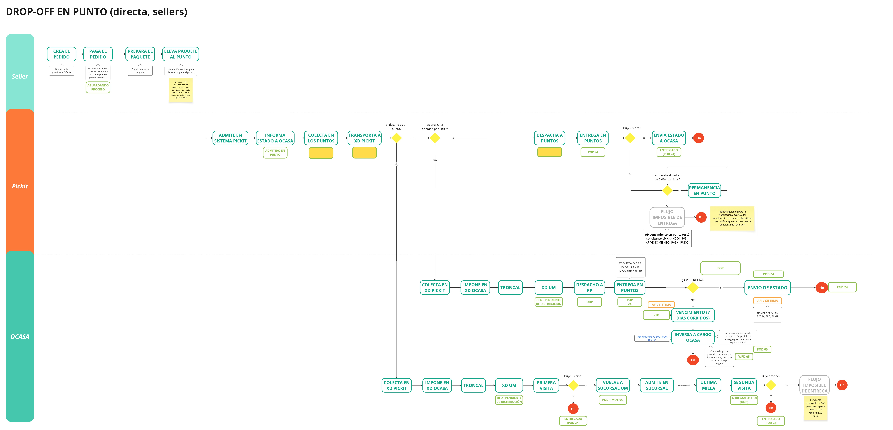
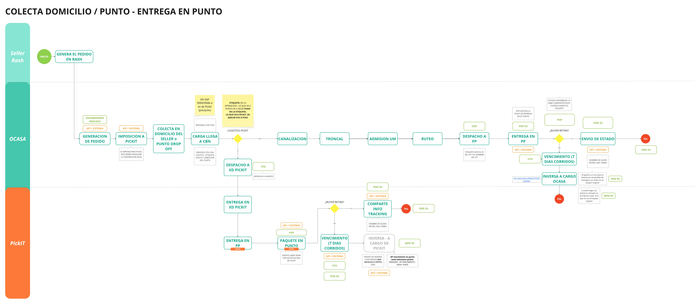
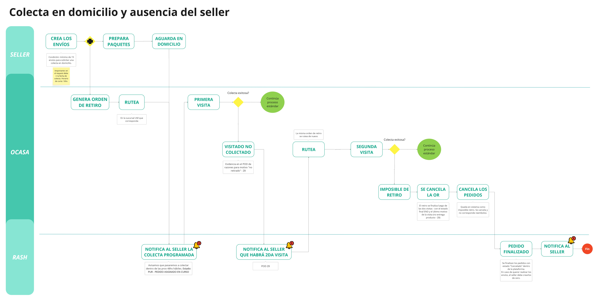
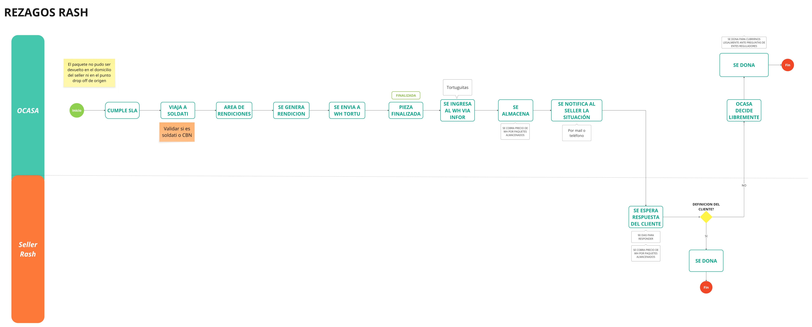
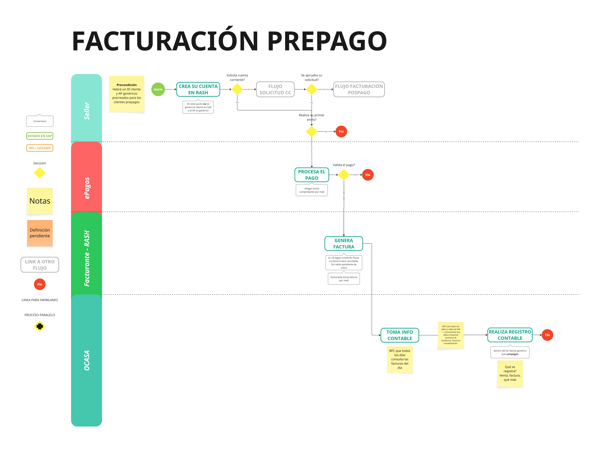
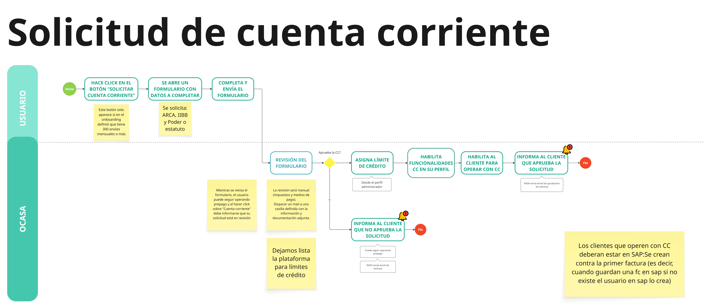
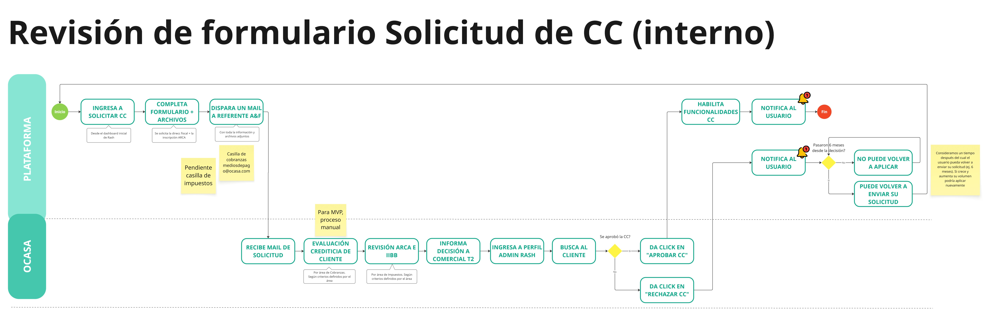
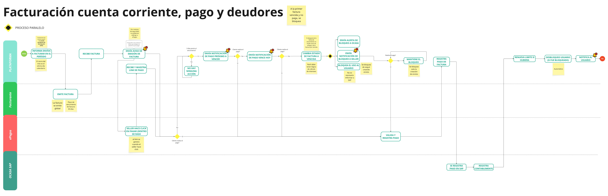
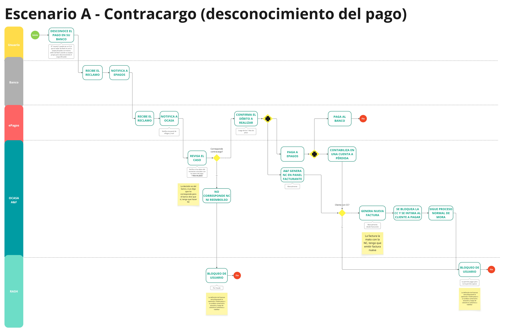
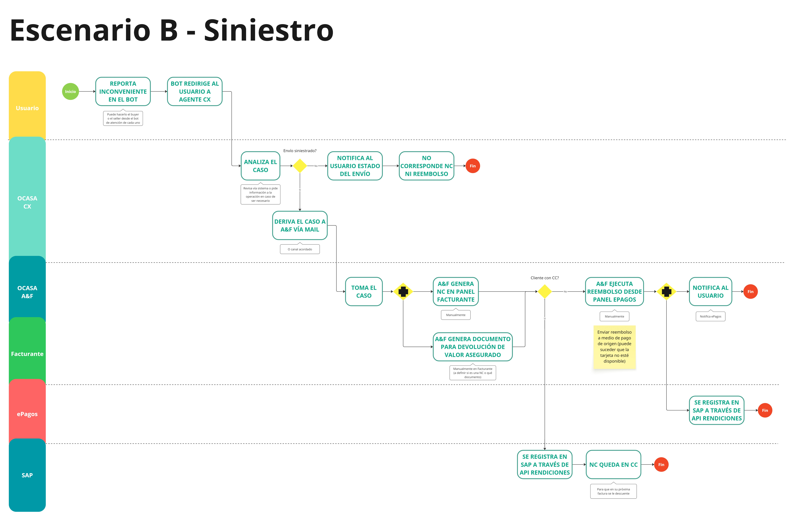

Alcance y flujos del MVP
Qué incluye y qué no incluye esta primera versión, el roadmap de lanzamiento y los flujos operativos de referencia.
- ✓Cobertura origen AMBA, destino nacional.
- ✓Método de envío paquetería estándar.
- ✓Drop-off en puntos Pickit.
- ✓Colecta en domicilio (mínimo 15 paquetes).
- ✓Entrega a domicilio (2 visitas).
- ✓Entrega a punto Pickit: OCASA opera CABA + Interior, Pickit opera GBA.
- ✓Devolución a origen en caso de imposible de entrega.
- ✓1 solicitante en SAP + 4 APs según el flujo logístico.
- ×Logística inversa — pendiente probar e implementar post-MVP.
- ×Integración Tiendanube — desarrollo ya hecho con Conexa, pendiente ajustes y pruebas. Disponible julio/agosto.
- ×Ajustes y bugs de prioridad baja que surjan de pruebas internas productivas.
| Origen | Destino | Detalle |
|---|
| Drop-off Pickit | Entrega a domicilio | Seller despacha en punto Pickit · OCASA entrega al buyer en su domicilio |
| Drop-off Pickit | Entrega en punto | Seller despacha en punto Pickit · buyer retira en punto (7 días corridos) |
| Colecta a domicilio | Entrega a domicilio | OCASA retira en domicilio del seller (mín. 15) · entrega en domicilio del buyer |
| Colecta a domicilio | Entrega en punto | OCASA retira en domicilio del seller (mín. 15) · buyer retira en punto |
Todas las combinaciones incluyen el escenario de imposible de entrega.
Diagramas de referencia para los escenarios operativos más relevantes del MVP.
Drop-off en punto (directa, sellers)

Colecta domicilio/punto — entrega en punto

Colecta en domicilio y ausencia del seller

Rezagos — imposible de entrega al seller
Aplica cuando hubo un imposible de entrega al buyer y el paquete vuelve a origen (domicilio o punto drop-off), y el seller nunca lo atiende ni lo retira.

Pendiente de definición: a qué depósito vuelve el paquete (Soldati o CBN).
Facturación y pagos
Generación de facturas, condición fiscal, cuenta corriente y medios de pago.
La factura se genera automáticamente al pagar, vía Facturante integrado con SAP. Nace cancelada (sin saldo pendiente). El seller la recibe por mail y está disponible en la plataforma.
RFC consulta diariamente las facturas del día y realiza el registro contable en SAP contra el ID cliente genérico para prepagos.
Flujo: facturación prepago

Escalar: equipo Key User SAPAnomalías en factura o registro contable.
Disponible para sellers que declararon 300+ envíos/mes en el onboarding. El botón "Solicitar cuenta corriente" aparece en el dashboard. Mientras se revisa, el seller puede seguir operando prepago.
- 1Seller completa formulario + adjunta ARCA, IIBB y Poder o estatuto.
- 2Plataforma dispara mail a casilla cobranzas/mediosdepago.
- 3Equipo Cobranzas evalúa crediticia. Equipo Impuestos revisa ARCA e IIBB.
- 4Admin&Finanzas toma la decisión e informa a Comercial T2, quien la carga en el perfil administrador.
- 5Plataforma notifica al seller. Si se aprueba: se habilita CC y se asigna límite de crédito.
Si rechazan, el seller puede volver a aplicar. Puede seguir operando prepago sin restricciones.
Flujo: solicitud de cuenta corriente

Escalar: equipo Cobranzas + Impuestos → Comercial T2Revisión manual para MVP. Proceso no automatizado.
Proceso interno de OCASA para evaluar y aprobar o rechazar una solicitud de cuenta corriente.
Flujo: revisión formulario solicitud CC (interno)

El seller declara su condición durante el onboarding. Todas las validaciones son automáticas contra ARCA.
| Condición declarada | IIBB | Validación |
|---|
| Responsable inscripto | Inscripto | Automática vía ARCA (getTributes) |
| Monotributista inscripto en IIBB | Sí | Validación ARCA + declaración del usuario |
| Monotributista no inscripto en IIBB | No | Validación ARCA |
| No inscripto | No aplica | Validación ARCA |
Escalar: equipo Key User SAP / ImpuestosCasos de edición manual de perfil de cliente o errores de facturación.
Todos integrados vía ePagos.
- 1Tarjeta de crédito y débito
- 2Transferencia bancaria
- 3Billetera virtual (ePagos)
Una vez que ePagos confirma el pago, la acreditación se refleja automáticamente en plataforma. El seller recibe comprobante por mail.
Si no se acredita: verificar si el pago fue confirmado del lado de ePagos. Si está confirmado y no refleja en plataforma, escalar a IT.
Escalar: equipo Cobranzas → ITMonitoreo de ePagos: equipo Cobranzas.
Ciclo completo de facturación mensual para clientes con cuenta corriente: emisión, avisos de vencimiento, pago, bloqueo y desbloqueo.
Flujo: facturación CC, pago y deudores

Escalar: equipo Key User SAPCasos donde el bloqueo, desbloqueo o registro contable no se refleje correctamente.
Cuando el titular de la tarjeta desconoce el pago ante su banco (fraude o uso indebido) y el banco inicia un contracargo a través de ePagos.
- 1El banco recibe el reclamo y notifica a ePagos. ePagos notifica a OCASA.
- 2Admin&Finanzas revisa el caso (tiene 7 días de plazo) verificando si los datos del remitente coinciden con los del pago.
- 3Si no corresponde el contracargo: no se genera NC ni reembolso.
- 4Si corresponde: se confirma el débito, se paga a ePagos, se genera NC en Facturante y se contabiliza en una cuenta a pérdida.
- 5Si el cliente tiene CC: se genera nueva factura, se bloquea la cuenta corriente y se lo intima a pagar (sigue proceso normal de mora).
- 6Si no tiene CC: se bloquea directamente al usuario por fraude.
La decisión final es del banco. Si OCASA considera que no corresponde pero el banco resuelve que sí, corresponde igual generar la NC.
Flujo: contracargo (desconocimiento del pago)

Escalar: equipo Admin&FinanzasRevisión y resolución del caso. Bloqueo de usuario por fraude.
Cuando el buyer o seller reporta un inconveniente con el envío (daño, pérdida, robo) a través del bot, y corresponde evaluar reembolso por el valor asegurado.
- 1El usuario reporta el inconveniente en el bot. El bot lo redirige a un agente de CX.
- 2CX analiza si el envío está siniestrado. Si no, notifica el estado del envío y no corresponde NC ni reembolso.
- 3Si sí está siniestrado: CX deriva el caso a Admin&Finanzas por mail.
- 4Admin&Finanzas genera la NC en Facturante y el documento de devolución del valor asegurado, en paralelo.
- 5Si el cliente tiene CC: la NC queda registrada en SAP y se descuenta en la próxima factura.
- 6Si no tiene CC: Admin&Finanzas ejecuta el reembolso desde el panel de ePagos al medio de pago de origen.
Flujo: siniestros

Escalar: equipo CX → Admin&FinanzasCX deriva el caso una vez confirmado el siniestro.
Estados de envíos
Qué significa cada estado en la plataforma, su código en SAP, y qué hacer si un envío no avanza.
| Estado en plataforma | Estado API | Código SAP | Motivo | Descripción |
|---|
| Confirmar | — | — | — | Envío creado pero no pagado. Botón que lleva al resumen para pagar. |
| Cancelado | Cancelled | POD | Z3 | Seller anula el envío estando pendiente de pago o de despacho. |
| Pendiente de colecta | Confirmed | PUS | — | Envío pago con origen colecta a domicilio. Se genera la solicitud. |
| Pendiente de colecta | — | PUR | — | Se asigna transporte. Dispara notificación al seller (próx. 48hs). |
| Llevar a punto | TakeToDropOff | — | — | Envío pago con origen drop-off en punto Pickit. |
| No retirado | VisitedNotCollected | PUP | <> Z1 | Primer intento de colecta fallido. Seller no estaba o no tenía listo el paquete. |
| Cancelado | ImpossibleCollection | END | Z8/Z9 | Segundo intento de colecta fallido. Se cancelan los pedidos. |
| Colectado | Dispatched | PUP | Z1 | OCASA retiró el paquete del domicilio o punto drop-off. |
| En centro | AtCenter | RAO | Z1 | El paquete ingresa físicamente a la primera planta logística. |
| En distribución | InDistribution | ODP | — | El paquete sale a calle desde la última planta logística. |
| Llega hoy | DeliveringToday | WAY | — | El transportista tiene asignada la entrega para el día (poco usado por choferes). |
| Entrega fallida | DeliveryFailed | POD | distinto Z4 | Primera visita fallida. Se programa segunda visita. |
| Redirigido | — | POD | 15 | No se pudo entregar en domicilio. Se repacta a un punto de retiro. |
| Listo para retirar | ReadyForPickUp | POP | Z4 | Paquete disponible en punto Pickit. 7 días corridos para retirar. |
| Entregado | Delivered | POD | Z4 | Entregado en domicilio, retirado en punto, o devolución entregada al seller. |
| No retirado | NotPickedUp | VTO | — | Vencieron los 7 días de guarda en el punto. Inicia logística inversa. |
| Retorno a origen | — | WPD | <> Z4 | Agotados los intentos de entrega o vencido el plazo. Comienza devolución al seller. |
| Devuelto a origen | ReturnedToOrigin | END | varios | Paquete devuelto y entregado al seller. Proceso finalizado sin llegar al buyer. |
| Devolución en punto | ReturnReadyForPickUp | DDO | — | Devolución lista para que el seller retire en el punto Pickit de origen. |
| Retiro de devolución | ReturnDispached | PUP | Z1 | Se retiró en un punto Pickit la devolución solicitada por el seller. |
| Incidente reportado | ReportedIncident | POD / WPD | 14, Y5, Y6, Y7 | Siniestro en tránsito (daño, pérdida) reportado por el transportista. |
| Imposible entrega | ImpossibleReturn | WPD | <> Z4 | Seller no recibió la devolución ni la retiró en punto. Tratado como no reclamado. |
Cada estado depende del uso correcto del POD en operación. Si el transportista no impacta el estado correcto, la plataforma no lo refleja.
- 1Verificar que el transportista haya impactado el estado correcto en POD.
- 2Verificar que el estado SAP esté migrando correctamente al orquestador (archivo SAP → server → base).
- 3Si persiste: escalar a Producto con número de envío y captura del estado en plataforma vs. SAP.
Escalar: equipo Producto → ITProducto gestiona el caso con IT. No escalar directamente a IT.
Solicitante Rash: 102005295
| Código AP | Flujo |
|---|
40044410 | Colecta domicilio → Entrega domicilio |
40044615 | Colecta domicilio → Entrega en punto |
40044269 | Colecta en punto → Entrega domicilio |
40044036 | Colecta en punto → Entrega en punto |
40044369 | Vencimiento en punto (solicitante Pickit) |
Usuarios y accesos
Cómo acceden los sellers a la plataforma, y cómo funciona el perfil administrador interno.
Cualquier persona con un CUIT o CUIL válido puede acceder y registrarse en la plataforma. El registro es 100% autogestivo, vía email/contraseña o con Google.
No existe usuario de prueba. Para testear el flujo completo es necesario registrarse con un CUIT/CUIL real y válido.
Acceso interno para gestión de usuarios registrados en la plataforma.
| Rol | Puede hacer | Quién lo usa | Para qué |
|---|
| Superadministrador | Crear y gestionar administradores | Producto | Gestiona nuevos usuarios, controla el funcionamiento general y da soporte. |
| Administrador | Ver usuarios · Aprobar/rechazar CC · Bloquear/desbloquear · Descargar archivo de usuarios | Comercial T2 | Revisa y resuelve solicitudes de cuenta corriente. |
| Usuario | Ver usuarios y solicitudes. Sin capacidad de aplicar cambios | Customer y Marketing | Obtienen información de usuarios para campañas de marketing, encuestas NPS, etc. |
Escalar: equipo ProductoPara creación de nuevos administradores o cambios de permisos.
Pickit
Drop-off, entrega en puntos de retiro e identificación de envíos Pickit en SAP.
Los envíos gestionados por Pickit se identifican por CPs ficticios, visibles en el monitor operativo.
| CP ficticio | ID | Nombre |
|---|
9999 | PCK | San Nicolás |
9998 | PCKS | Cepita |
Drop-off: SLA retiro desde punto Pickit: 24 a 48 hs hábiles.
Colecta a domicilio: mínimo 15 paquetes. Solo disponible en carga masiva.
Entrega en punto: el buyer tiene 7 días corridos para retirar.
| Origen | Destino | Operador logístico |
|---|
| Drop-off Pickit | Entrega domicilio | OCASA |
| Drop-off Pickit | Entrega en punto | OCASA (CABA + Interior) / Pickit (GBA). A partir de julio, CABA pasa a Pickit. |
| Colecta domicilio | Entrega domicilio | OCASA |
| Colecta domicilio | Entrega en punto | OCASA (CABA + Interior) / Pickit (GBA). A partir de julio, CABA pasa a Pickit. |
Escalar: equipo IT / integración PickitIncidencias en integración, estados PCK/PCKS o CP ficticios.
Landing pública con el mapa completo de puntos Pickit disponibles para retiro.
Esta red es solo para compradores (buyers). Es la red de pick up, no de drop-off de sellers.
Drop-off en punto (directa, sellers)
Colecta domicilio/punto — entrega en punto
CX y soporte
Canales de atención, bot CALI, Freshdesk y notificaciones automáticas a sellers y buyers.
Atención automatizada 24/7 para sellers. Disponible en plataforma y WhatsApp.
Deriva a agente de CX si no resuelve o si el usuario reporta un problema con su envío. Tickets caen en la cola de Freshdesk.
Se espera un pico de tickets en las primeras semanas post-lanzamiento.
Escalar: equipo CX → Producto → ITSi el problema no se resuelve desde CX, Producto gestiona con IT.
Tickets escalados por el bot llegan a la cola de Freshdesk. El equipo CX revisa y gestiona.
El tracking del envío está disponible en tiempo real en la plataforma. Orientar al seller a consultar ahí antes de escalar.
Para evitar saturar a los usuarios, solo se envían los estados más relevantes. El seguimiento completo está disponible en tiempo real en la plataforma.
Entrega directa
Retorno a origen
La entrega falló y el paquete comienza proceso de retorno.
Estado SAP: WPD · Motivo: <> Z4 · Asunto: "El envío @cod no pudo ser entregado y está en camino a origen"
Incidente reportado
Siniestro en tránsito (daño, pérdida) reportado por transportista.
Estado SAP: POD · Motivo: 14/Y5/Y6/Y7 · Asunto: "El envío @cod presentó un inconveniente"
Colecta a domicilio
Colecta programada (1ra visita)
Aviso del día en que el transportista pasará a buscar el paquete.
Estado SAP: PUR · Asunto: "Aviso de colecta programada"
Colecta programada (2da visita)
Pasaron y no encontraron al seller. Aviso de segundo intento.
Estado SAP: PUP <> Z1 · Asunto: "Aviso de colecta programada (SEGUNDA VISITA)"
Imposible retiro
Seller ausente en la segunda visita. Envío cancelado.
Estado SAP: END · Motivo: Z8/Z9 · Asunto: "Pasamos por tu domicilio pero no pudimos retirar los envíos"
Pagos y cuenta corriente
Envíos pendientes de pago
A las 48hs de crear un envío sin pagar, aviso de que en 24hs se elimina.
Disparado por plataforma · Asunto: "Tienes envíos pendientes de pago"
Factura emitida (CC)
Factura disponible para pagar. Incluye link y botón de pago.
Disparado por plataforma · Asunto: "Tu factura ya está disponible"
Factura próxima a vencer (CC)
Recordatorio a 3 días del vencimiento.
Disparado por plataforma · Asunto: "Tu factura está próxima a vencer"
Factura vence hoy (CC)
Recordatorio el día del vencimiento.
Disparado por plataforma · Asunto: "Tu factura vence hoy"
Cuenta bloqueada (CC)
Factura vencida y no pagada. Cuenta suspendida hasta regularizar.
Disparado por plataforma · Asunto: "Tu factura venció y no recibimos tu pago"
Cuenta reactivada (CC)
Pago recibido. Cuenta desbloqueada.
Disparado por plataforma · Asunto: "Tu cuenta fue reactivada"
Aprobación / Rechazo CC
Resultado de la evaluación de la solicitud de cuenta corriente.
Disparado por plataforma · Asuntos: "Aprobamos tu solicitud de cuenta corriente" / "Rechazamos tu solicitud de cuenta corriente"
Cuenta
Verificación de correo
Código de verificación al registrarse.
Disparado por plataforma
Cuenta creada
Confirmación de alta exitosa.
Disparado por plataforma
Restablecer contraseña
Solicitud de cambio de contraseña.
Disparado por plataforma
Bloqueo / Desbloqueo por sospecha
Cuenta bloqueada o reactivada desde el perfil administrador por actividad sospechosa.
Disparado por plataforma
Las notificaciones al buyer salen directo de OCASA eCommerce. Se agregaron las de entrega en punto (nuevas para Rash).
Entrega a domicilio
Pedido en preparación
Paquete en camino a la primera planta.
Estado: PUS
Pronta visita
El transportista pasará pronto.
Estado: HFD
Hoy llegamos
Entrega programada para hoy.
Estado: ODP
En camino
Transportista en camino al domicilio.
Botón en POD de la app
Entrega fallida
No fue posible realizar la entrega. Se programa segunda visita.
Estado: POD · Motivo: NZ4
Imposible de entrega
No se pudo entregar en ninguna visita. Paquete en retorno.
Estado: WPD · Motivo: distinto Z4
Entrega realizada
Paquete entregado exitosamente. Incluye encuesta NPS.
Estado: POD · Motivo: Z4
Entrega en punto (nuevas para Rash)
Pedido en preparación
Mismo trigger que domicilio.
Estado: PUS
Pronta visita al punto
El paquete está por llegar al punto de retiro.
Estado: HFD
Listo para retirar
Paquete disponible en el punto. 7 días corridos para retirar.
Estado: POP · Asunto: "Tu pedido está listo para retirar"
Envío retirado
Buyer retiró el paquete en el punto. Incluye encuesta NPS.
Estado: POD Z4 · Asunto: "Retiraste tu pedido"
Retorno a origen
Paquete no retirado en plazo. Regresa al seller.
Estado: WPD · Motivo: distinto Z4 · Asunto: "Tu pedido no fue retirado"
Escalar: equipo ITSi se reportan notificaciones que no llegan (buyer o seller).